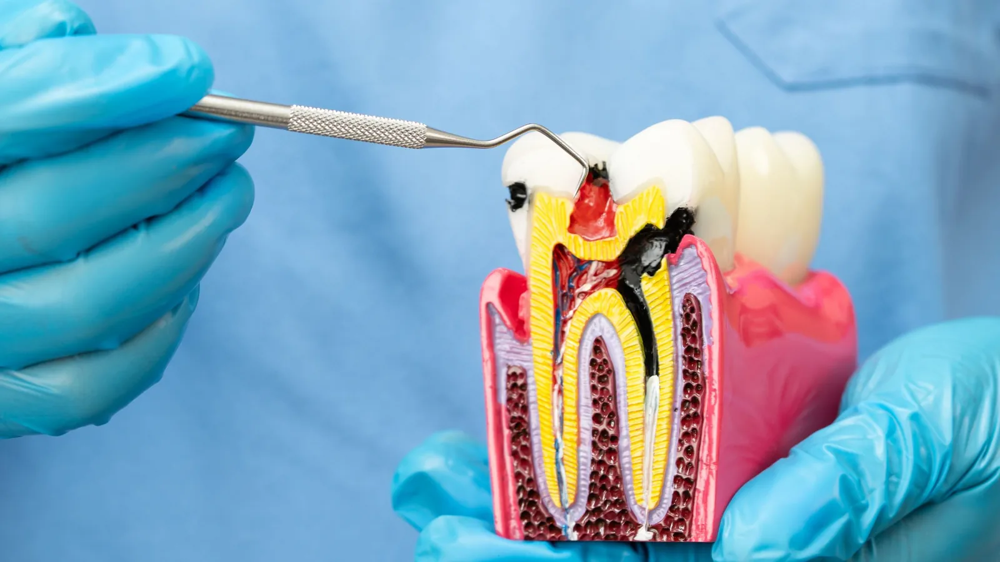

Restorative Dentistry
Keeping a tooth you would rather not lose.
Root canal treatment has an unfortunate reputation, largely built on how the procedure was done decades ago and on the pain people were in before they had it. In practice it is the treatment that saves teeth that would otherwise have to come out.
Inside every tooth is a chamber containing nerve and blood vessels. When bacteria reach that chamber — through deep decay, a crack, trauma, or under a failing restoration — the tissue becomes inflamed and then infected. It does not recover on its own. Root canal treatment removes the infected tissue, disinfects and shapes the canals, and seals them so bacteria cannot re-establish.

Signs you may need it
- Severe or throbbing toothache, particularly at night
- Pain that lingers well after something hot or cold
- Pain on biting or when the tooth is touched
- A tooth that has darkened
- A tender swelling or a small pimple on the gum near the tooth
- Facial swelling, which should be seen promptly
Pain that stops on its own is not reassurance. It often means the nerve has died, and the infection is continuing without a nerve to signal it.
Treatment here
Dr Meg carries out root canal treatment including on molars, which are more complex because of the number and curvature of their canals. That capability came from years in regional practice, where referring every case to an endodontist in a capital city was not realistic for patients.
Some cases are genuinely better handled by an endodontist — unusual anatomy, calcified canals, a previously treated tooth that needs redoing, or a case with complications. Where that is true, she will tell you and arrange the referral rather than pressing on.
Where a 3D view of the roots is needed for planning, CBCT imaging is available on site.
What is involved
Treatment is carried out under local anaesthetic. The tooth is isolated with a rubber dam to keep it clean and dry, an opening is made, and the canals are cleaned, shaped and disinfected. Depending on the tooth and how much infection is present, this may be completed in one appointment or across two, sometimes with a medicated dressing in between.
Once the canals are clean, they are sealed and the tooth is restored. A back tooth that has had root canal treatment has usually lost a good deal of structure and becomes more brittle, so a crown is often recommended to protect it from fracture.
Afterwards
Tenderness on biting for a few days is common as the surrounding tissue settles, and ordinary pain relief usually manages it. Severe or increasing pain, or swelling, is worth phoning about.
The tooth is then reviewed to confirm the surrounding bone is healing.
Frequently asked questions
The treatment is done under local anaesthetic and most people find the appointment much easier than the toothache that brought them in. Everyone is different and no dentist can promise a completely pain-free appointment, but the procedure itself is not the ordeal its reputation suggests.
One or two for the root canal itself, depending on the tooth and the degree of infection, plus a further appointment if a crown is planned. Molars generally take longer than front teeth.
Extraction costs less on the day. Replacing the tooth afterwards with an implant or a bridge usually costs more than the root canal treatment would have. Keeping your own tooth is generally the better long-term option where it is realistic.
Front teeth occasionally discolour after root canal treatment. Where that happens, there are options to address it, which Dr Meg can discuss.
Outcomes depend heavily on the individual tooth, the anatomy of the canals, how much infection is present and how the tooth is restored afterwards. Dr Meg will give you a realistic assessment for your tooth rather than a general figure.
Often on back teeth, less often on front teeth. It is assessed case by case based on how much sound tooth structure remains.